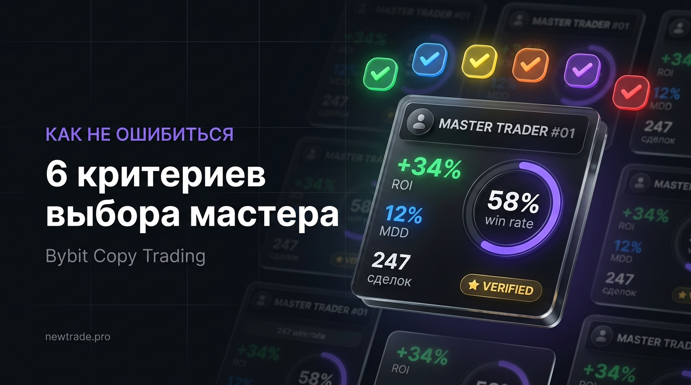

Как выбрать мастер-трейдера на Bybit: 6 критериев, на которые смотрят опытные копиры

На Bybit тысячи мастер-трейдеров. У каждого — красивые цифры на обложке профиля: «+284% за 30 дней», «9 823 подписчика», «winrate 91%». Большинство новичков выбирают того, у кого цифры выглядят впечатляюще. И именно поэтому большинство новичков теряют деньги.
Красивая обложка в копитрейдинге — это маркетинг. За ней может скрываться стратегия с мартингейлом, которая однажды обнулит счёт. Или кратковременный везунчик, чья «система» — это случайность на растущем рынке.
В этой статье — 6 критериев, которые профессиональные копиры используют для анализа мастеров. Не «кто популярнее», а «кто стабильнее и надёжнее».
Выбор мастера — это не лотерея и не доверие к красивым скриншотам. Это анализ данных по конкретным метрикам. Потратьте 30 минут на изучение профиля — и сэкономите месяцы разочарований и деньги.
Критерий 1: ROI — доходность за правильный период
ROI показывает, сколько процентов прибыли заработал мастер за выбранный период относительно своего капитала. Это первое, что бросается в глаза — и первое, чем можно манипулировать.
Как читать цифры: Смотрите ROI за 90 дней и за 180 дней — не за 7 или 30. Краткосрочные всплески могут быть случайными. Стабильный ROI на длинном горизонте — признак системной работы, а не везения.
Совет профессионала: Откройте вкладку «График доходности» в профиле мастера. Хорошая кривая растёт плавно, с небольшими откатами. Плохая — резко идёт вверх, потом падает вертикально.
Критерий 2: Максимальная просадка (MDD)
MDD — это наибольшее падение капитала от пика до дна за всё время работы мастера. Показывает, насколько «больно» было подписчикам в худший период. Это самый честный показатель риска стратегии.
Как читать цифры: MDD 15% означает: в какой-то момент счёт падал на 15% от своего максимума. Чем меньше MDD — тем консервативнее стратегия. Соотношение ROI к MDD (Calmar Ratio) — один из главных показателей качества: хорошо, когда ROI минимум в 2 раза превышает MDD.
Совет профессионала: Сравните дату максимальной просадки с состоянием рынка. Если мастер показал -35% в момент, когда весь рынок падал на 20% — его стратегия работала хуже рынка.
Критерий 3: Срок работы на платформе
Срок работы — это ответ на вопрос: «Прошёл ли этот мастер разные рыночные условия?» Бычий рынок, медвежий, боковик — хорошая стратегия должна работать во всех фазах.
Как читать цифры: Минимум для доверия — 6 месяцев активной торговли. 12 месяцев и более — уже серьёзный аргумент в пользу стабильности стратегии.
Совет профессионала: Проверьте активность: торгует ли мастер регулярно?
Критерий 4: Количество сделок — объём выборки
Любой показатель имеет смысл только при достаточном объёме данных. На малой выборке один крупный выигрыш искажает всю картину.
Как читать цифры: 50 сделок — абсолютный минимум для первичного анализа. 100+ — начало достоверной статистики. 300+ — высокая уверенность в стабильности результатов.
Совет профессионала: Разделите количество сделок на срок работы. Если сделок 15 за 6 месяцев — вы будете месяцами ждать первой позиции.
Критерий 5: Используемое кредитное плечо
Кредитное плечо определяет, насколько агрессивна стратегия и насколько высок риск ликвидации. Высокий ROI при высоком плече — не мастерство, а риск.
Как читать цифры: Посмотрите в профиле мастера раздел «Среднее плечо» или «Максимальное плечо».
Совет профессионала: Не смотрите только на среднее плечо — проверьте максимальное. Мастер, который в среднем использует 3x, но иногда открывает позиции на 30x — непредсказуемый риск.
Критерий 6: Стабильность и характер роста
Профессионал зарабатывает каждый месяц примерно одинаково. Везунчик делает иксы за одну неделю, потом сидит в минусе три месяца.
Как читать цифры: Откройте помесячную статистику. Хороший мастер показывает стабильный плюс большинство месяцев.
Совет профессионала: Сравните месяцы роста рынка и падения. Если мастер зарабатывал только когда BTC рос — он не торгует, он просто держит лонг.
Светофор показателей: шпаргалка для быстрой оценки
Используйте эту таблицу как экспресс-фильтр при просмотре десятков мастеров.
| Показатель | Хорошо | Нормально | Осторожно |
|---|---|---|---|
| ROI за 90 дней | Выше 15% | 5–15% | Ниже 5% или отрицательный |
| Максимальная просадка | До 15% | 15–25% | Выше 25% |
| Срок работы | 6+ месяцев | 3–6 месяцев | Меньше 3 месяцев |
| Кол-во сделок | 100+ | 50–100 | Меньше 50 |
| Winrate | 50–65% | 40–50% | Ниже 40% или выше 75% |
| Используемое плечо | 1x–3x | 3x–7x | Выше 10x |
Разбор трёх типов профилей: учимся на примерах
Профиль А: «Звезда месяца»
- ROI за 30 дней: +340%
- ROI за 90 дней: +12%
- Максимальная просадка: 67%
- Кол-во сделок: 23
- Плечо: среднее 18x
- Срок работы: 2 месяца
- Подписчиков: 4 200
Профиль Б: «Стабильный профи»
- ROI за 90 дней: +31%
- ROI за 180 дней: +58%
- Максимальная просадка: 14%
- Кол-во сделок: 187
- Плечо: среднее 3x
- Срок работы: 14 месяцев
- Прибыльных месяцев: 11 из 14
Профиль В: «Середнячок»
- ROI за 90 дней: +18%
- Максимальная просадка: 28%
- Кол-во сделок: 74
- Плечо: среднее 7x
- Срок работы: 5 месяцев
- Прибыльных месяцев: 3 из 5
Полный список красных флагов
- ROI выше 100% за месяц — слишком хорошо, чтобы быть правдой
- Просадка выше 40% — стратегия может обнулить счёт
- Winrate выше 80–85% при большой выборке — вероятен мартингейл
- Менее 30 сделок — недостаточно данных для выводов
- Плечо выше 15x — стратегия живёт на грани ликвидации
- Отсутствие сделок в периоды коррекций — мастер «прятался»
- Резкий рост подписчиков — маркетинговый разгон
- Нет информации о стратегии — непрозрачность = риск
- Обещания гарантированной доходности
- Мастер удалил убыточные сделки из истории
Чеклист: 12 вопросов перед подключением к мастеру
- ROI за 90 дней положительный и соответствует ожиданиям
- ROI за 90 дней выше, чем за 180 дней (а не резкий всплеск в последний месяц)
- Максимальная просадка не превышает 25%
- Соотношение ROI к MDD выше 2:1
- Срок работы на Bybit — не менее 6 месяцев
- Количество сделок — не менее 80–100
- Прибыльных месяцев — больше половины от всего срока
- Среднее плечо не превышает 7x
- Мастер торговал и во время рыночных коррекций
- В профиле есть описание стратегии или стиля торговли
- Нет явных красных флагов из списка выше
- Выделяемая сумма — не более 30–40% от торгового капитала на одного мастера
Вывод
Выбор мастера — это не интуиция и не доверие к цифрам на обложке. Это анализ по шести конкретным критериям: доходность за правильный период, просадка, срок работы, объём статистики, используемое плечо и стабильность результатов.
Потратьте 30 минут на анализ профиля — и вы отсеете 90% мастеров, которые рано или поздно принесут убытки. Оставшиеся 10% — это те, кому стоит доверить часть своего капитала.
Помните: в копитрейдинге нет «идеального мастера». Есть мастера, подходящие под ваш риск-профиль. Выбирайте того, чья просадка вас не разбудит ночью. Лучший мастер — не тот, кто показывает максимальный ROI, а тот, чья стратегия понятна, стабильна и переживёт следующий медвежий рынок.
Мастер с проверенной статистикой — уже на newtrade.pro
Не нужно искать мастера среди тысяч профилей. На newtrade.pro — авторская стратегия копитрейдинга на Bybit с открытой статистикой, умеренной просадкой и прозрачными условиями.
Посмотреть статистику на newtrade.pro →